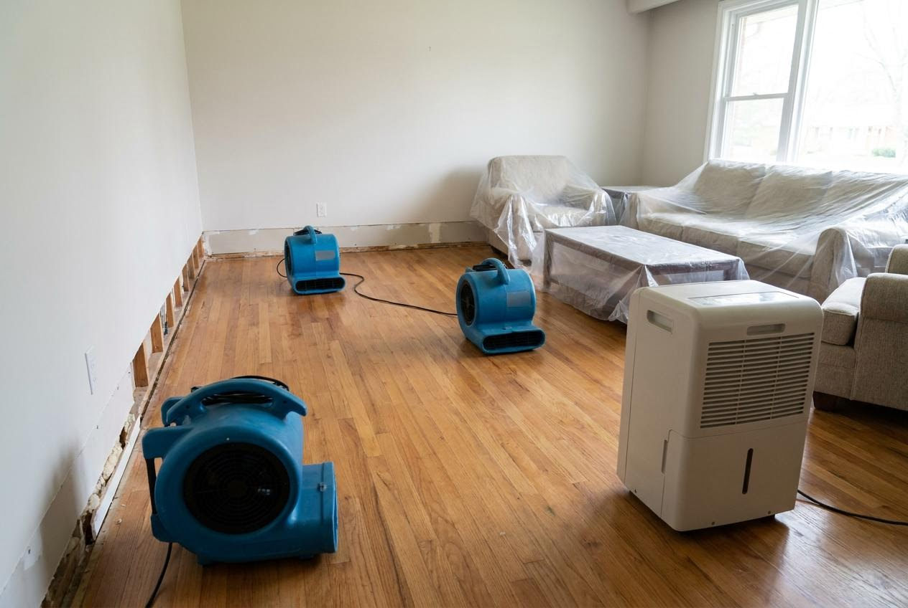

A plumbing failure never checks whether the office is open. Picture a supply line bursting at 2am: the longer it runs, the further the water reaches. In Warren, we pick up emergency calls around the clock. A real person picks up, asks a few quick questions, and gets a crew moving. Our only job on the initial visit: shut down the water and hold the damage where it is.
Expect the following once you dial our number. First come three questions: what is the source, is it still flowing, and is the electricity safe? If you can reach the main shutoff, we talk you through closing it. Once we arrive, we find the source, check which rooms are wet with moisture meters, and start removing water. Your furniture and other items are relocated or raised above the damp flooring.
The reason to move quickly is that this kind of damage keeps advancing with time. Drywall wicks water upward within hours. Wood floors start to cup. In 24 to 48 hours, mold may start to grow. Same-night work usually means a smaller, quicker, less costly job than waiting out the weekend. When you cannot tell whether it is urgent, phone us for an honest opinion.

Emergency Water Damage Restoration FAQ
Need Help With Emergency Water Damage Restoration?
Our IICRC-certified technicians are standing by to help.
Call (479) 235-9353 NowThe Benefits of Professional Emergency Water Damage Restoration
In an emergency, the hard part is not mopping up what you can see. It is knowing where the rest of the water went. Baseboards, wall cavities and the space beneath flooring all take on water in minutes. Meters and thermal imaging show us the wet spots hidden from view, which means they get handled that night rather than surfacing weeks on as a stain or a smell.
A night crew also brings equipment no household has on hand: truck-mounted extractors, commercial air movers and dehumidifiers sized to the space. Working around contaminated water and wet electrical wiring is routine for us, as is logging photos and moisture readings starting in the first hour. Those records are useful if you file an insurance claim. The same team that takes the emergency call sees the work through until your home is dry.
Should You DIY or Call a Pro?
While some minor restoration tasks can be handled by handy homeowners, most water damage work requires professional expertise, specialized equipment, and proper safety training. Here's a comparison:
| Factor | DIY Approach | Professional Service |
|---|---|---|
| Water removal speed | Bucket by bucket with a household vac | Hundreds of gallons out by truck unit |
| Claim documentation | Phone photos, if you remember | Full photo and moisture log, first hour on |
| Safety | Risk of shock or contaminated water | Hazards checked before work starts |
| Response at night | You, a mop and towels | On-call technicians, day or night |
| Drying equipment | Fans from the closet, windows cracked | Industrial drying gear matched to each room |
Maintenance Tips for Emergency Water Damage Restoration
Taking preventive measures can help you avoid costly water damage issues down the road. Follow these tips from our IICRC-certified technicians:
- Find your main water shutoff today and make sure everyone in the house can close it.
- Replace old supply hoses on washers, toilets and faucets before they burst.
- Test your sump pump before the rainy season and consider a battery backup.
- Save an emergency restoration company's number in your contacts ahead of time.
- Put leak alarms beneath sinks and beside the dishwasher, washer and water heater.
- Learn the location of your breaker panel, which lets you safely kill power to a wet room.
Not Sure What You Need?
Call Warren Restoration to discuss your emergency water damage restoration needs with a IICRC-certified technician.
Call (479) 235-9353 TodayHow We Handle Emergency Water Damage Restoration
We follow a proven process to ensure every job is completed to the highest standards. Here's how we handle emergency water damage restoration from start to finish:
Answer the Call
A person answers at any hour, asks about the source, the rooms affected and any safety concerns, and tells you what to do while a crew is on the way to your home.
Shut Off the Water
Once on site, the crew looks for electrical and contamination risks before closing off or isolating the supply behind the leak. Until the flow ends, no other step does much good.
Remove Standing Water
We pull standing water with pumps and truck-mounted extractors, move furniture out of wet areas, and map hidden moisture in walls and floors with meters and thermal imaging.
Stabilize and Plan
Air movers and dehumidifiers are set before we leave. We then walk you through what we found, what the next 3 to 5 days of drying look like, and what your insurer will need.
Signs It Is Time for Emergency Water Damage Restoration
Catching these issues early helps you avoid costly problems and protect your property. Here are the most common indicators that it's time to call a professional:
- The water keeps running, and the shutoff valve is out of reach or nowhere to be found.
- Walls on the lower floor are wet from top to bottom because of a leak overhead.
- A growing pool on the floor is heading for the next room or running downstairs.
- An outlet, a light fixture or the ceiling above has water dripping out of it.
- Carpet, drywall or hardwood has been soaked for more than a few hours.
- The tank on your water heater gave out and its contents are spreading through the room.
- A ceiling is sagging or bulging with trapped water above it.
Don't Wait Until It's an Emergency
Many water damage problems start small but can escalate quickly into costly emergencies. If you notice any of these signs, contact Warren Restoration at (479) 235-9353 for a prompt evaluation.
Get Emergency Water Damage Restoration Help Today
The sooner you call, the sooner we can help. Reach Warren Restoration for same-day service.
Call (479) 235-9353 Now